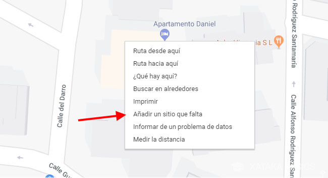
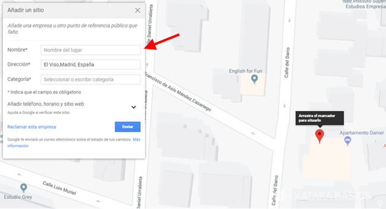
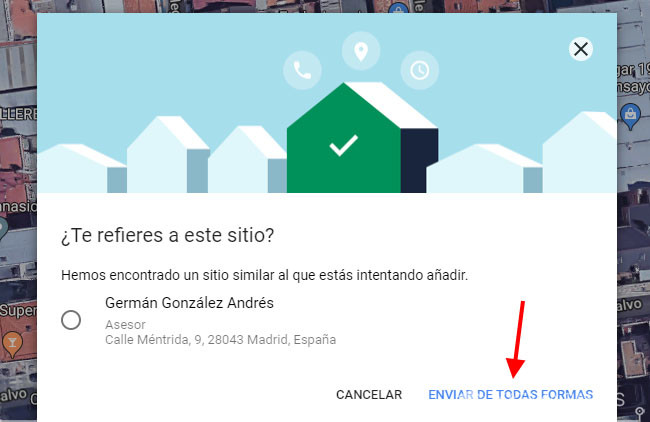
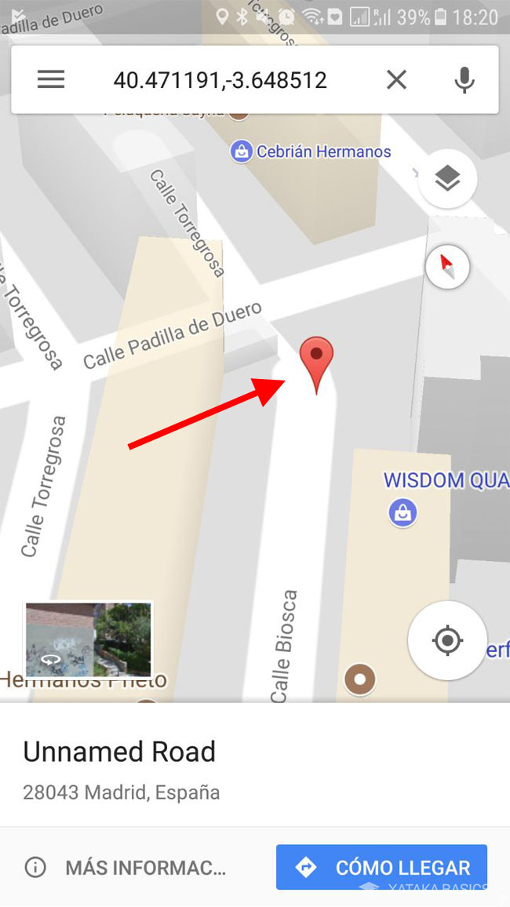
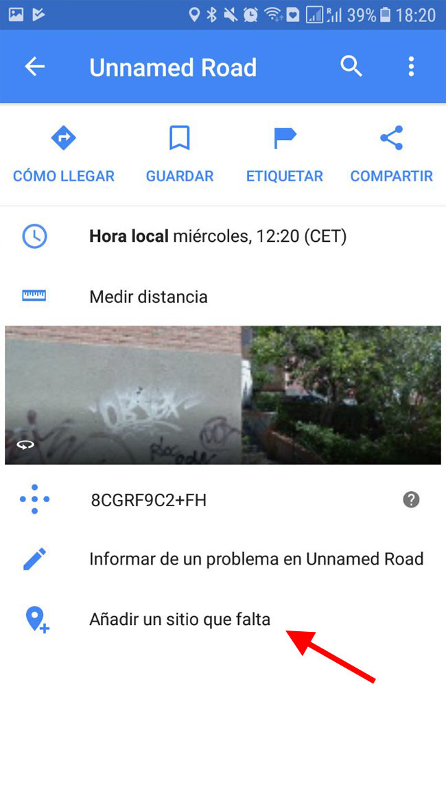
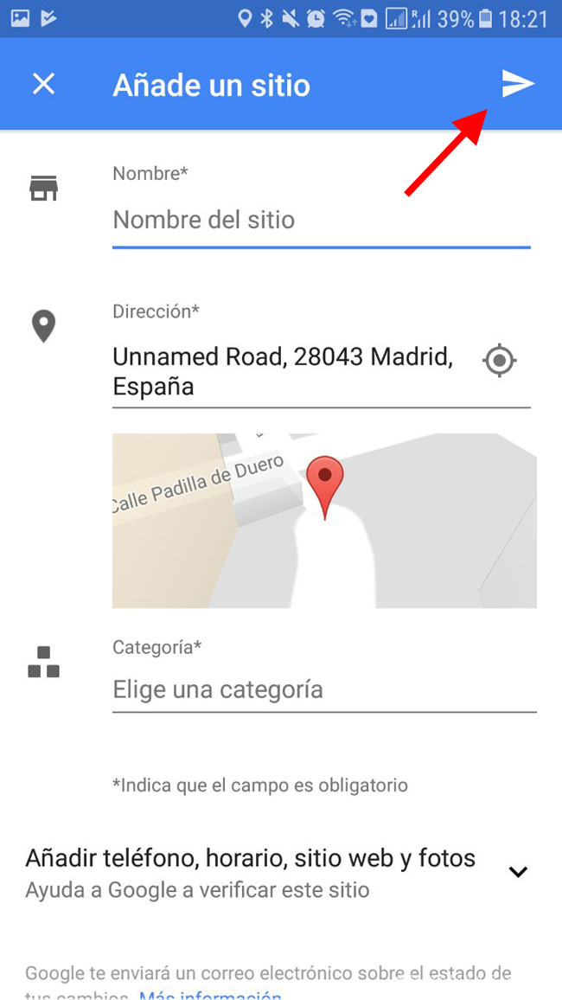
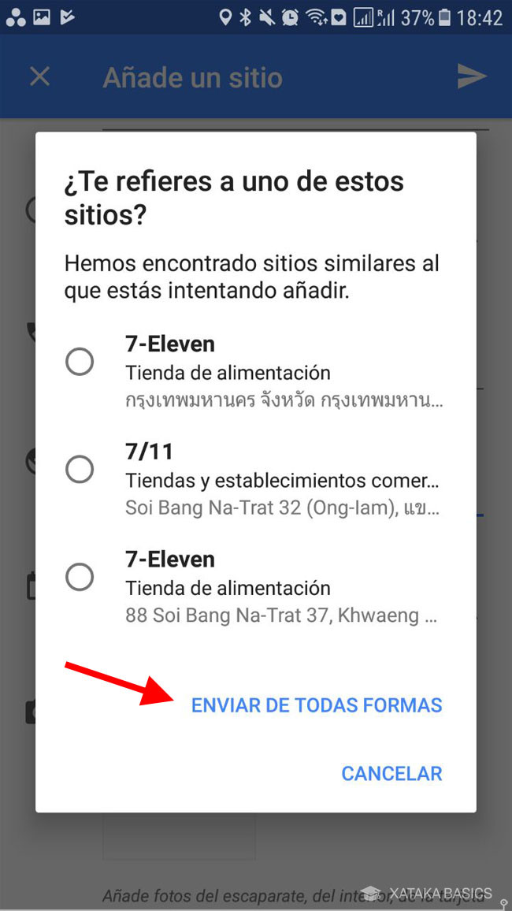

Introducción
Hoy veremos cómo puedes agregar un nuevo lugar al mapa de recursos comunitarios fácilmente desde tu PC y tu móvil. Si has detectado que falta algún sitio en el mapa, lo puedes añadir tú mismo incluyendo información básica. Parte del éxito de nuestra comunidad radica en la colaboración de cada uno de nosotros. Cualquier usuario puede sugerir nuevos sitios, asegurando que nuestra comunidad tenga acceso a los recursos que necesita.
Comunidad Conectada revisa las sugerencias y las aprueba tras una verificación para asegurar que la información es precisa y relevante. Asegúrate de escribir los datos correctamente para aumentar la probabilidad de aprobación.
Añade un sitio desde google maps para Comunidad Conectada
Añadir un sitio que falta en mapa de google maps es muy sencillo. Primero, debes encontrar dónde está ese lugar en el mapa. Intenta que la ubicación sea lo más precisa posible, basándote en las calles o referencias locales, y haz clic derecho con el ratón para abrir el menú contextual. Elige Añadir un sitio que falta.
Ahora es el momento de rellenar los datos del lugar. Solo tres campos son obligatorios: el nombre, la dirección y la categoría:
- Nombre: Para tener mayor probabilidad de éxito, asegúrate de escribir el nombre correctamente, sin erratas y tal cual figura en el sitio oficial, sin añadiduras. Por ejemplo, "Centro de Salud Local".
- Dirección: Se rellena automáticamente de acuerdo a dónde está situado el marcador en el mapa, pero si fuera incorrecta o la puedes completar con datos adicionales (número, puerta, piso, etc.), rellénalo.
- Categoría: Puede ser el elemento más complicado de rellenar, pues hay una gran cantidad de subcategorías. Por ejemplo, comedor comunitario, centro de salud, punto de donación, etc. Empieza a escribir la categoría que más se aproxime.
Si lo deseas puedes tocar en Añadir teléfono, horario y sitio web para expandir más campos del formulario que también puedes rellenar si los conoces. Cuando lo hayas rellenado todo, pulsa Enviar para enviar tu sugerencia.
Es posible que tras pulsar Enviar recibas un aviso de lugares similares. Revisa las sugerencias por si acaso y, si estás convencido de que el lugar que estás añadiendo es nuevo, pulsa Enviar de todas formas.
Añade un sitio desde la app de Comunidad Conectada
Añadir un lugar desde la aplicación móvil de Comunidad Conectada es igual de sencillo y consta de los mismos pasos, aunque el proceso es ligeramente distinto. Primero, haz una pulsación prolongada en la ubicación del lugar que quieres añadir, hasta que se cree un marcador.
Ahora desliza hacia arriba desde la parte inferior de la pantalla para expandir la información sobre el lugar seleccionado: tu marcador. Abajo del todo encontrarás la opción que nos interesa: Añadir un sitio que falta.
Rellena la información del lugar, concretamente el nombre, la dirección y la categoría. Si deseas, puedes tocar en Añadir teléfono, horario, sitio web y fotos para incluir más información. Cuando hayas terminado, pulsa el botón de Enviar en la barra superior.
Es posible que recibas una ventana de aviso indicando que hay lugares con un nombre similar. Revisa las sugerencias por si acaso y, si estás convencido de que el lugar es nuevo, pulsa Enviar de todas formas.